Minha conta
Notificações
Minha conta
Notificações
Back to the Future é uma série de filmes de comédia de aventura e ficção científica escrita por Robert Zemeckis e Bob Gale, dirigida por Zemeckis e produzida por Gale e Neil Canton para a Amblin Entertainment de Steven Spielberg e distribuída pela Universal Pictures.
Burger King da Victory Boulevard
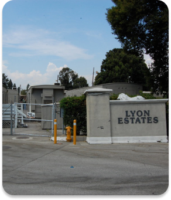Lyon Estates
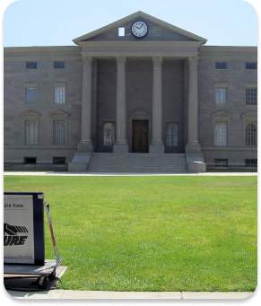A praça da Corte Judicial da cidade de Hill Valley.
Voltar
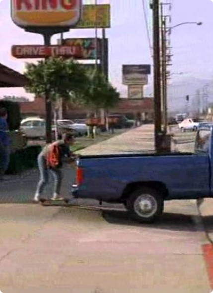A locação mais rotineira de toda a série nos anos 1980: o Burger King. Marty passa de skate em seu caminho para a casa de Doc, no Victory Boulevard, em Burbank. Não muito do filme foi filmado lá, mas Burbank, com seus pitorescos shoppings nostálgicos e casas humildes, mas incrivelmente caras, para criar sua família nuclear anacrônica, é o local de nascimento de Marty McFly e da mítica classe média de Walt Disney.
Avaliação
Endereço: Universal Blvd, Orlando, FL 32819, Estados Unidos
Preço: Gratuito
Melhor época para visitar: Primavera
Telefone: +1 407-363-8000
Horário de funcionamento: ⋅ 08:00 às 19:00
Voltar
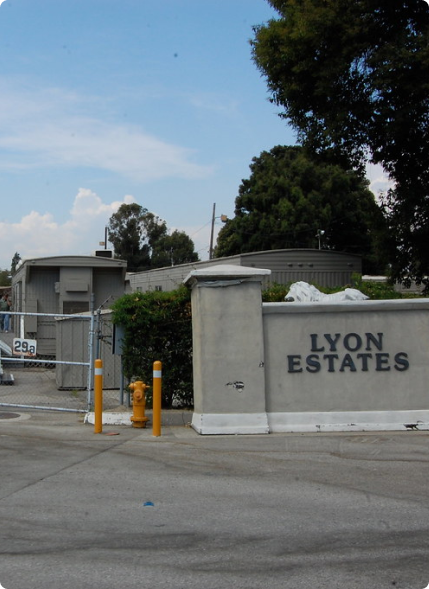Lyon Estates foi uma subdivisão desenvolvida por volta de 1955, localizada a 3 km ao sul do centro de Hill Valley . Marty McFly morou aqui em 1985 antes de se mudar para Hilldale. Ficava no mesmo lado da cidade que o Twin Pines Mall, anteriormente Twin Pines Ranch, conectado presumivelmente por uma rodovia com cerca de um quilômetro de distância no extremo sul da cidade.
Avaliação
Endereço: Universal Blvd, Orlando, FL 32819, Estados Unidos
Preço: Gratuito
Melhor época para visitar: Primavera
Telefone: +1 407-363-8000
Horário de funcionamento: ⋅ 08:00 às 19:00
Voltar
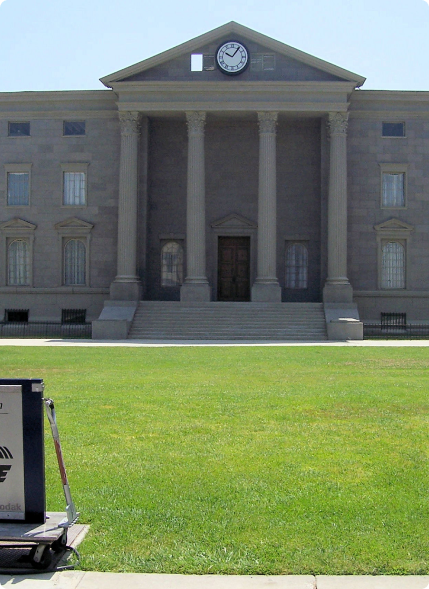Courthouse Square é um backlot localizado no Universal Studios Lot em Universal City, Califórnia. O conjunto é composto por várias fachadas que formam uma praça da cidade americana arquetípica com um tribunal como peça central. Antes a área era conhecida como Mockingbird Square devido ao seu papel no filme To Kill a Mockingbird. Foi severamente danificado por um incêndio várias vezes, incluindo em 1957, 1990 e 2008. Foi reconstruído após cada incidente.
Avaliação
Endereço: Universal Blvd, Orlando, FL 32819, Estados Unidos
Preço: Gratuito
Melhor época para visitar: Primavera
Telefone: +1 407-363-8000
Horário de funcionamento: ⋅ 08:00 às 19:00
Comer, Rezar, Amar é um best-seller americano com mais de quatro milhões de cópias vendidas, escrito pela jornalista e escritora Elizabeth Gilbert. Na história, ela relata as suas experiências reais vividas na Itália, Índia e Indonésia, em busca de autoconhecimento, após uma crise existencial e um longo e doloroso divórcio. O livro deu origem ao filme Comer, Rezar, Amar, de 2010, com Julia Roberts no papel principal.
Restaurante Pancrazio
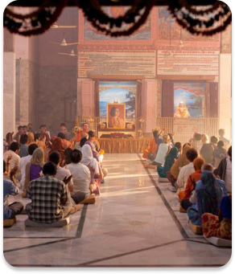Ashram Hari Mandir
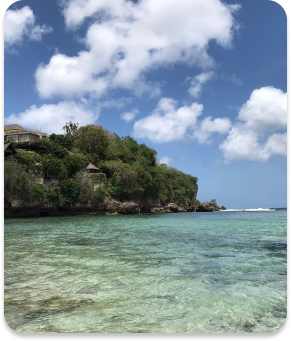Praia de Padang-Padang
Voltar
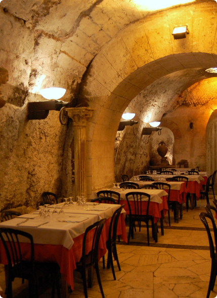Se você faz parte do fã clube que adora novas experiências gastrômicas, esse filme apresenta boa opção para você!
Localizado em Roma, o restaurante Da Pancrazio oferece uma típica massa italiana e um ambiente mais formal.
Avaliação
Endereço: Piazza del Biscione 91, 00186
Preço: Gratuito
Melhor época para visitar: Inverno - Aproveite para experimentar os vinhos produzidos na região.
Telefone: +39 066861246
Horário de funcionamento: 18:00 às 22:00
Voltar
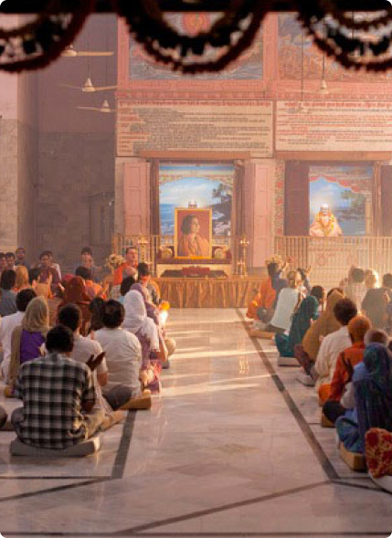O local escolhido para a seção “Rezar” do filme acontece na cidade de Pataudi, Índia. A busca por autoconhecimento é através do serviço altruísta, chamado “seva”. Em troca do ensinamento espiritual, ela faz limpeza no local, faz voto de silêncio e outros.
Avaliação
Endereço: Pataudi, Haryana 122503, Índia
Preço: Contribuição voluntária para manutenção do local
Melhor época para visitar: O ano todo
Telefone: +91 124 267 2508
Horário de funcionamento: 06:00 às 18h00
Voltar
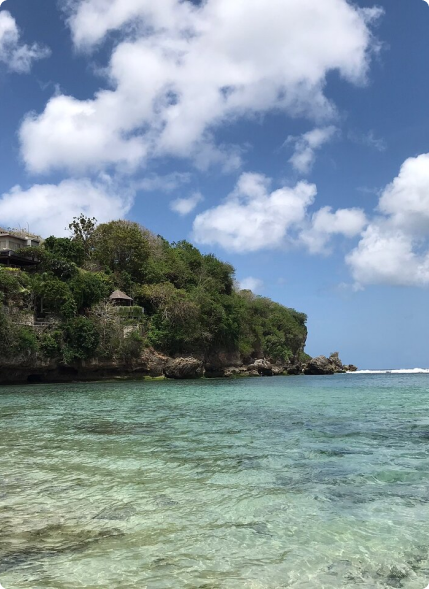Liz vai para a Indonésia para a última etapa da viagem, onde se apaixona por Felipe. Ubud e a praia de Padang-Padang, em Bali, são os principais locais de filmagem da Indonésia. Os belos arrozais onde Liz é vista andando de bicicleta é o Tegallalang Rice Terrace. Liz e Felipe também aproveitam um passeio pelo vibrante e movimentado mercado local, que na verdade é o Mercado de Ubud, também conhecido como Pasar Seni. Ele está localizado em frente ao famoso Palácio de Ubud.
Endereço: Padang-Padang Beach, Pecatu, South Kuta, Badung Regency, Bali, Indonésia
Preço: Entrada gratuita
Melhor época para visitar: Verão
Telefone: --
Horário de funcionamento: O dia todo
Peaky Blinders é uma série de televisão britânica baseada em um conto épico de uma família gângster ambientado em Birmingham, na Inglaterra, em 1919, logo após a Primeira Guerra Mundial. A família é notadamente conhecida por ter navalhas costuradas em seus chapéus, além de estar envolvida em um esquema ilegal de apostas em corridas de cavalos. Inspirada nos eventos e história da associação criminosa de Birmingham de mesmo nome, a série foi criada por Steven Knight e produzida por Caryn Mandabach Productions e Tiger Aspect Productions.
Birmingham Museum.
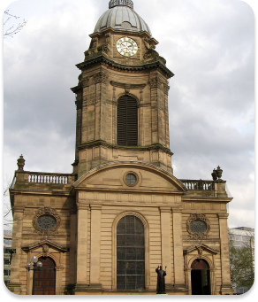Catedral de São Filipe.

Praça Victoria Square.
Voltar
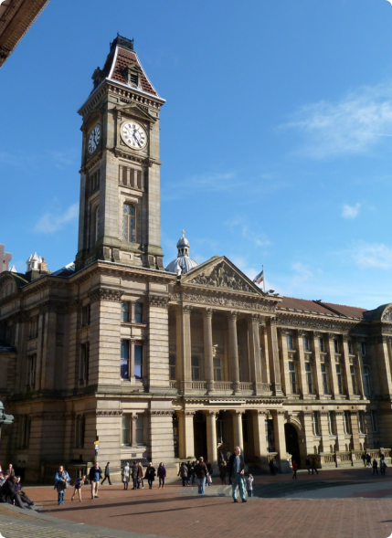Fundado em 1885, o Birmingham Museum and Art Gallery possui uma coleção de importância internacional que abrange obras de arte, cerâmica, trabalho em metal, joalharia, história natural, arqueologia, etnografia, história local e história industrial. A coleção diversificada de antiguidades inclui moedas da Antiguidade até a Idade Média, artefatos da Índia antiga e Ásia Central, Chipre antigo e antigo Egito. Há material da Grécia Clássica, do Império Romano e da América Latina.
Endereço: Chamberlain Square, Birmingham B3 3DH, Reino Unido.
Preço: Gratuito
Melhor época para visitar: Indiferente
Telefone: +44 121 348 8032
Horário de funcionamento: de sábado a quinta de 10h às 17h / sexta de 10h30 às 17h.
Voltar
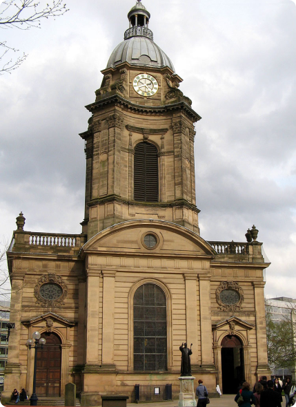A Catedral de São Felipe é a principal igreja de Birmingham e foi construída entre 1710 e 1725 em estilo barroco. O interior retangular do corredor da igreja tem corredores separados da nave por pilares estriados de forma clássica com capitais toscanos que suportam uma arcada encimada por uma cornisa fortemente projetada. Durante a Segunda Guerra Mundial, a catedral foi bombardeada e destruída em 7 de novembro de 1940. O edifício passou por uma ampla restauração em 1948, após o término da guerra.
Endereço: 55 Temple Row.
Preço: Entrada gratuita
Melhor época para visitar: Indiferente
Telefone: 0121 262 1840
Horário de funcionamento: de segunda a sexta de 7h30 às 18h30 / sábado e domingo de 7h30 às 17h.
Voltar

Victoria Square é uma das principais praças de Birmingham, o marco zero da cidade e onde está localizada a Prefeitura. O nome da praça é uma homenagem à rainha Victoria e há uma grande estátua dela na área central. Até o final do século XX, a área era um cruzamento de diversas ruas. Foram feitos planos tornar o local em um espaço para a circulação de pedestres. A construção da praça começou em 1992 e foi concluída em 1994, quando foi oficialmente aberta por Diana, a Princesa de Gales.
Endereço: 1 Hill St, Birmingham.
Preço: Entrada gratuita
Melhor época para visitar: Dezembro, Natal.
Telefone: 0121 262 1840
Horário de funcionamento: Segunda a Sexta de 8:00 hrs até 18:00 hrs.